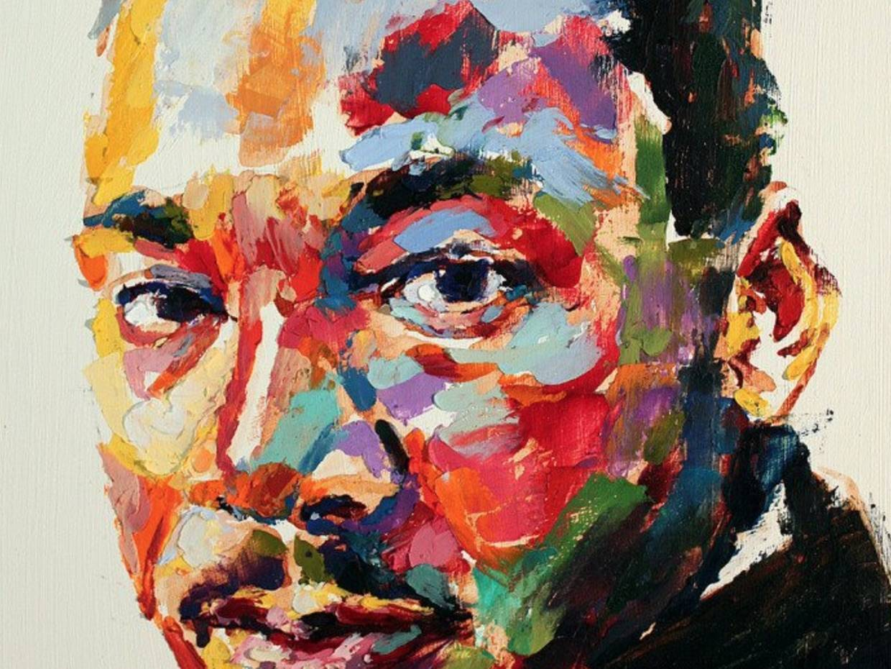

Quotes by Martin Luther King

- I have decided to stick with love. Hate is too great a burden to bear
- We must learn to live together as brothers or perish together as fools
- I refuse to accept the view that mankind is so tragically bound to the starless midnight of racism and war that the bright daybreak of peace and brotherhood can never become a reality... I believe that unarmed truth and unconditional love will have the final word
- Injustice anywhere is a threat to justice everywhere
- The ultimate measure of a man is not where he stands in moments of comfort and convenience, but where he stands at times of challenge and controversy
- Nothing in all the world is more dangerous than sincere ignorance and conscientious stupidity
- Peace is not merely a distant goal that we seek, but a means by which we arrive at that goal
- If a man has not discovered something that he will die for, he isn't fit to live
- Rarely do we find men who willingly engage in hard, solid thinking. There is an almost universal quest for easy answers and half-baked solutions. Nothing pains some people more than having to think
- Whatever your life's work is, do it well. A man should do his job so well that the living, the dead, and the unborn could do it no better